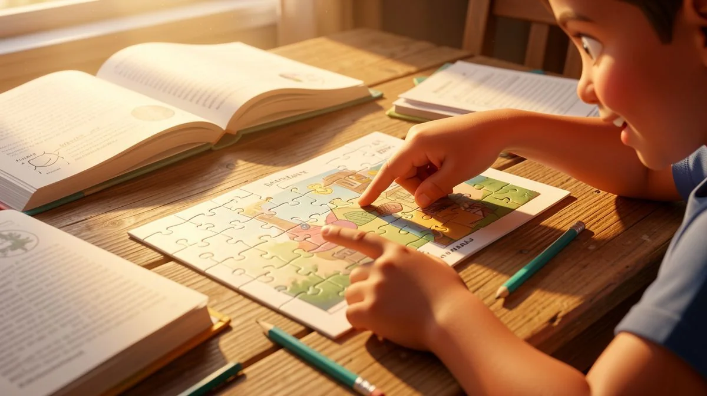
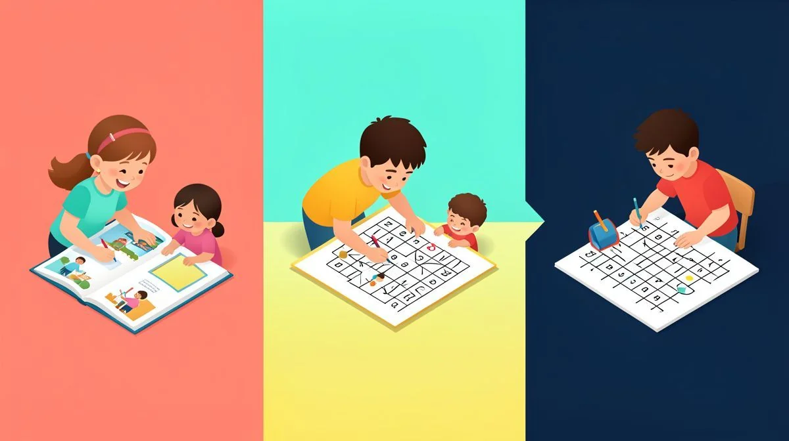
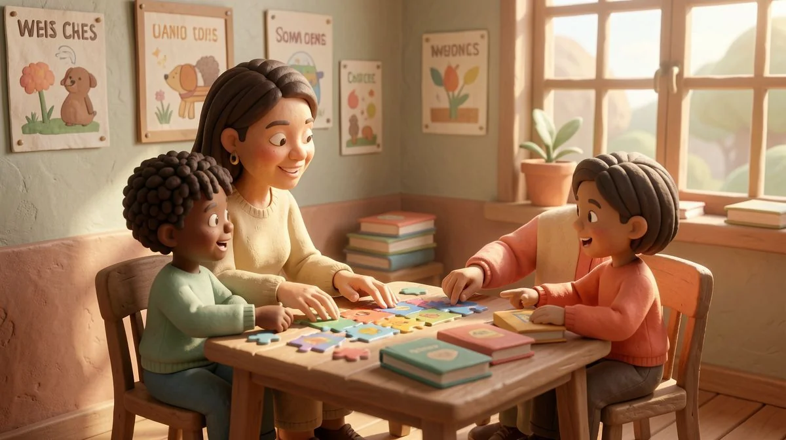
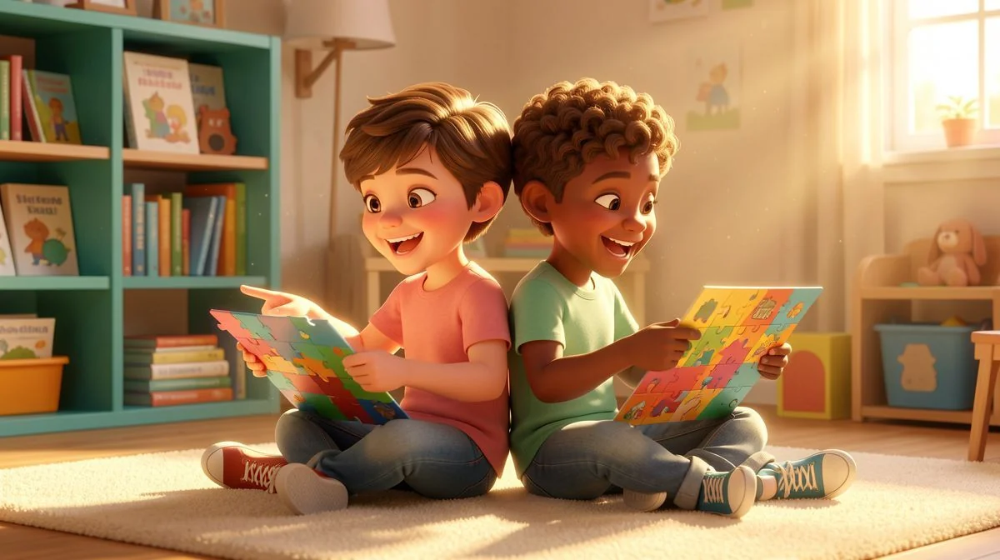

How Photorealistic Spot the Difference Puzzles Sharpen a ...
Little Smart Genius Team•February 21, 2026•Spot the Difference (Photorealistic)
Share

How Photorealistic Spot the Difference Puzzles Sharpen a Child's Focus
Just last Tuesday, I watched a magical thing happen in my classroom. My third graders, who can sometimes be a whirlwind of energy and off-task chatter, fell into a deep, collective silence. The cause? A new set of photorealistic spot the difference for kids puzzles featuring buildings from around the world. I saw brows furrowed in concentration, fingers tracing lines on the page, and heard the soft, triumphant "aha!" of a discovered detail.
It wasn't just a game; it was a full-brain workout in disguise. Research in journals like *Early Childhood Education Journal* consistently shows that targeted visual perception activities are a cornerstone of cognitive development, directly supporting the skills needed for reading and math. In this guide, I'll share not just the "why" behind these powerful puzzles, but the "how"—practical strategies you can use at home or school, with or without special resources, to build this essential skill.
Beyond the Game: The Science of Observation Skills in Child Development
We might think of spot-the-difference as a simple pastime, but in the brain of a child, it's a complex construction site. Every time they search for a discrepancy, they are laying neural pathways critical for academic and life success. This is especially helpful for photorealistic spot the difference for kids.
What is Visual Discrimination and Why Does It Matter?
At its heart, this activity is a master class in visual discrimination. This is the brain's ability to see subtle differences and similarities between objects, shapes, and symbols. Think about the letters 'b,' 'd,' 'p,' and 'q'—they are all just a circle and a line! A child with strong visual discrimination can quickly and accurately tell them apart, which is a non-negotiable pre-reading skill.
The same goes for numbers like 6 and 9, or in science, comparing the veins on two leaves. Photorealistic spot the difference puzzles train this exact muscle, asking the brain to notice a missing window pane, a changed shadow, or an added item in a richly detailed scene.
The Brain at Work: Cognitive Processes in Spot-the-Difference
What I've found works best is understanding what you're actually asking a child's brain to do. It's not passive looking; it's active interrogation. The brain must:
Sustain Attention: Hold focus on a single task, resisting distraction.
Working Memory: Hold the details of one image in mind while scanning the second.
Engage in Systematic Scanning: Apply a strategy (left-to-right, top-to-bottom, quadrant-by-quadrant) rather than looking randomly.
This coordinated effort involves the visual cortex, but also the prefrontal cortex—the home of executive function. It's a phenomenal workout. This is especially helpful for photorealistic spot the difference for kids.
Laying the Foundation for Academic Success
The payoff extends far beyond the puzzle page. Strong visual perception is a silent partner in nearly every subject. In math, it helps a child line up numbers for addition, recognize geometric shapes, and interpret graphs. In reading, it enables fluent tracking of text across a page and swift letter recognition. In science, it's the core skill of careful observation and comparison. By strengthening this skill early, we give kids a tangible advantage.
Tailoring the Challenge: Benefits by Age Group (4-12)
One thing I love about a well-designed puzzle set is its flexibility. The same theme can be used across multiple grades by adjusting your expectations and support. Here’s how I see the benefits break down.
Ages 4-6: Building Foundational Skills
For our youngest learners, the goal is exposure and fun. We're building the concept of "same" and "different" and training the eyes to move carefully across a page (visual tracking). This is especially helpful for photorealistic spot the difference for kids.
Use puzzles with only 2-3 major differences.
Focus on the language: "Do you see a bird in this picture? Let's see if it's in the other one too!"
Praise patience and effort. A circle drawn messily around a found difference is a huge win.
Ages 7-9: Enhancing Accuracy and Speed
This is the sweet spot where independence blooms. Kids at this age are refining their fine motor skills, so asking them to circle differences neatly is great practice. Their attention span is longer, allowing for puzzles with 5-10 differences. The focus shifts to accuracy and developing their own systematic method. I often hear them coaching each other: "Check the sky!" or "I looked at every door." That's metacognition in action!
Ages 10-12: Applying Critical Thinking
For upper elementary students, the puzzle becomes a strategic challenge. They can handle photorealistic spot the difference images with 10+ subtle differences. We talk about strategy: "Should you scan by color first or by object type?" I encourage them to time themselves for a fun self-competition, or to work in pairs where each partner can only see one image and must communicate to find the differences. This adds a layer of descriptive language and teamwork to the task.
From Screen to Scene: How to Use Picture Puzzles Effectively at Home or School
Having a great puzzle is one thing; using it effectively is another. Over the years, I've developed a simple framework to maximize the learning and minimize the frustration.
Setting the Stage for Success
Environment matters. I never hand these out during a chaotic transition. We create a "focus zone"—cleared desks, good lighting, and a sharp pencil or fine-tip marker (crayons are too blunt for detail). Sometimes, I'll use a sand timer for engagement; it turns the activity into a personal challenge rather than me rushing them. The key is that the timer is for *them*, not for me to create pressure.
The Teacher's/Parent's Guided Dialogue
Your role isn't to find the differences for them. It's to be a coach. Use open-ended prompts that guide their process:
"Let's do a quick overview of both pictures first. What's the big thing you see?"
"Try using your finger to trace a path across the first picture, then follow the same path on the second."

"You found one in the top left! That's a great spot. Do you think there might be another one in that same area?"
This dialogue builds their internal problem-solving voice.
Scaffolding and Differentiation Strategies
In any group, kids are at different levels. Scaffolding is how we help everyone succeed. For a child who is overwhelmed:
Fold the paper to show only one row at a time.
Use a blank index card to cover the lower half of both images.
Find the first difference together to build confidence.
For a child who needs more challenge:
After they find all differences, ask them to write a three-sentence story about the scene.
Challenge them to find all differences and then turn the paper over and list from memory everything they saw in the picture.
Ask them to create a *single* intentional difference between two identical printed images for you to find.
Keeping It Fresh: Creative Variations and Pro Tips
Don't let the activity become routine. With a little creativity, you can extend the learning in so many directions. Here are my favorite twists.
Turn It Into a Cooperative Game
The "Partner Puzzle" is a classroom favorite. Pair students up and give each partner only one of the two images. They must sit back-to-back and *describe* their picture to each other to find the differences without peeking. The level of descriptive language and active listening this requires is incredible. You can also try a small group version where the team has one minute of silent looking, then two minutes of collaborative search.
Integrate Writing and Storytelling
Once the visual hunt is over, the learning doesn't have to stop. Ask questions that spark imagination: "Who do you think works in this building?" or "What would happen if that open window suddenly closed?" Have them write a descriptive paragraph about the setting, or a short news story about an event happening there. This connects visual analysis to language arts seamlessly.
Connect to Real-World Observation
This is where photorealistic spot the difference truly shines. Because the images look real, the skill transfers directly. Go on a "neighborhood walk" and look for changes: a new flower in a garden, a different car parked on the street. Compare two pieces of fruit from the same bag. In the classroom, have students observe a simple science setup (like plants on a windowsill) over a week and journal the subtle changes. This teaches them that observation is a living, everyday skill.
Common Mistakes to Avoid When Building Observation Skills
I've made some of these mistakes myself early on. Learning what *not* to do is just as valuable.
Prioritizing Speed Over Process
If we celebrate the first child done, we're telling everyone that speed is the goal. Instead, I praise the careful searchers: "I see you're checking every window methodically—that's a fantastic strategy." The goal is a thorough, systematic process, not a race.

Neglecting the Debrief
Putting the puzzle away immediately wastes half the learning. Take two minutes to debrief. Ask: "Which difference was the trickiest? Why do you think it was hard to see? What will you look for first next time?" This reflection solidifies the strategy for future use.
Using Poor Quality or Overly Abstract Images
While cartoon puzzles have their place, fuzzy, low-resolution, or wildly abstract images don't train the brain for the real world. The nuanced textures, shadows, and details in a photorealistic spot the difference for kids puzzle are what make the cognitive transfer so powerful. They learn to discriminate subtle variations in lighting and texture, which is exactly what they need to do when reading handwritten work or observing a science experiment.
For the best results, seek out clear, high-quality images. You can find some great free worksheets online, but for a curated progression, many teachers rely on premium resources designed by educators.
A Classroom-Tested Resource: Spot the Difference | Picture Puzzle Visual Perception | Buildings Vol.4
After fifteen years in the classroom, I’m incredibly selective about the resources I use. My time is precious, and an activity needs to be effective, engaging, and easy to implement. The resource I consistently return to for building observation skills is the Spot the Difference | Picture Puzzle Visual Perception | Buildings Vol.4 set.
What makes it work so well in my room is its use of clean, engaging photorealistic spot the difference scenes. The buildings are interesting and varied, capturing kids' curiosity. The image quality is superb, ensuring the differences are challenging but fair. I find it’s ideal for that 6-12 age range I mentioned; my second graders can tackle the simpler scenes with support, while my fifth graders get genuinely stumped by the more complex ones, which they love.
Watching a child develop laser focus and a keen eye for detail is one of the great joys of teaching and parenting. It’s a skill that serves them in every subject and in everyday life. By incorporating activities like photorealistic spot the difference for kids into your routine, you’re doing far more than keeping them busy—you’re actively building their cognitive toolkit.
Start with the free ideas, focus on the process, and most importantly, have fun with it. The investment in their observation skills pays dividends for years to come.
Frequently Asked Questions
At what age can a child start spot the difference puzzles?
Children as young as 3-4 can begin with very simple, large-format puzzles (2-3 differences). The key is matching the complexity to the child's developing attention span and visual maturity.

My child gets frustrated easily. How can I help?
Scaffold the activity! Cover half the image, use a ruler to scan line-by-line, or find the first difference together to build confidence. Always emphasize effort and strategy over the final score.
How are photorealistic puzzles better than cartoon ones?
Photorealistic images require more nuanced visual discrimination, training the brain to notice subtle variations in texture, shadow, and detail—skills that transfer directly to reading, science, and navigating the real world.
Can these activities help children with attention difficulties?
Yes, when used appropriately. The clear goal and structured visual task can be highly engaging. Start with very short, timed sessions (2-3 minutes) and build up, providing positive reinforcement for sustained focus.
How often should my child do these puzzles?
Regular, short practice is more effective than marathon sessions. Incorporating a puzzle 2-3 times a week as part of a learning routine can yield noticeable improvements in focus and observation over time.
Frequently Asked Questions
At what age can a child start spot the difference puzzles?
Children as young as 3-4 can begin with very simple, large-format puzzles (2-3 differences). The key is matching the complexity to the child's developing attention span and visual maturity.
My child gets frustrated easily. How can I help?
Scaffold the activity! Cover half the image, use a ruler to scan line-by-line, or find the first difference together to build confidence. Always emphasize effort and strategy over the final score.
How are photorealistic puzzles better than cartoon ones?
Photorealistic images require more nuanced visual discrimination, training the brain to notice subtle variations in texture, shadow, and detail—skills that transfer directly to reading, science, and navigating the real world.
Can these activities help children with attention difficulties?
Yes, when used appropriately. The clear goal and structured visual task can be highly engaging. Start with very short, timed sessions (2-3 minutes) and build up, providing positive reinforcement for sustained focus.
How often should my child do these puzzles?
Regular, short practice is more effective than marathon sessions. Incorporating a puzzle 2-3 times a week as part of a learning routine can yield noticeable improvements in focus and observation over time.
At what age can a child start spot the difference puzzles?
Children as young as 3-4 can begin with very simple, large-format puzzles (2-3 differences). The key is matching the complexity to the child's developing attention span and visual maturity.
My child gets frustrated easily. How can I help?
Scaffold the activity! Cover half the image, use a ruler to scan line-by-line, or find the first difference together to build confidence. Always emphasize effort and strategy over the final score.
How are photorealistic puzzles better than cartoon ones?
Photorealistic images require more nuanced visual discrimination, training the brain to notice subtle variations in texture, shadow, and detail—skills that transfer directly to reading, science, and navigating the real world.
Can these activities help children with attention difficulties?
Yes, when used appropriately. The clear goal and structured visual task can be highly engaging. Start with very short, timed sessions (2-3 minutes) and build up, providing positive reinforcement for sustained focus.
How often should my child do these puzzles?
Regular, short practice is more effective than marathon sessions. Incorporating a puzzle 2-3 times a week as part of a learning routine can yield noticeable improvements in focus and observation over time.